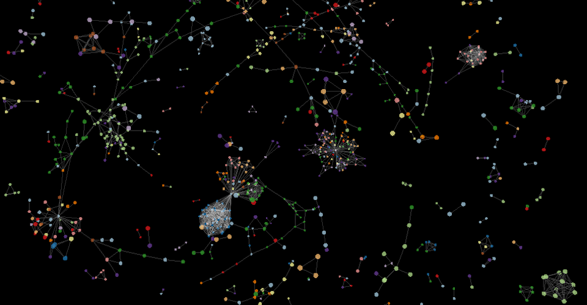
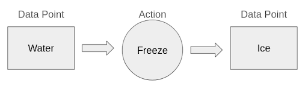

Ontology-Driven Pentesting: Can Graphs Replace LLM Reasoning?
A graph-based agent architecture that replaces LLM reasoning with an explicit ontology of data points and actions — trading autonomy for control and auditability.

I have been building out an idea for an autonomous pentesting agent oriented around a graph database that contains the interconnected web of data point and action nodes which define the possible paths for the engagement.
This agent relies on two graph databases: a knowledge graph and a live instance graph, as well as the Python scaffolding that guides the agent and provides the tools it needs to take real action whether that be performing scans or writing back to the database.
The knowledge graph represents a full map of the potential data points and actions that can be expected in a given engagement. The success of the engagement can be limited or enabled by the depth of the knowledge graph. The knowledge graph defines the ontology that is used to organize the data expected. For example, if a web page is discovered, the knowledge graph defines the way that this data point should be stored, where it's oriented in the graph, and the types of actions that can be taken with this object type.
There are two types of nodes in the knowledge graph, data points and actions, which have relationships with one another. When a data point node leads to an action node, this represents a potential action that can be taken from that data point node. The action node will then connect to a downstream data point node, which represents the outcome of the action node.
The knowledge graph specifies unique actions that can be executed for data points. For example, it's possible that the model would have to choose between two action nodes, the "freeze" action, which creates the "ice" data point, and the "evaporate" action, which creates the "steam" data point. The key here is that although the "melt" action is an action that exists elsewhere in the graph, it is not connected to the water data point and thus cannot be chosen in this scenario.

The second database is the live instance graph. This is the graph of data point nodes that represents the data that has been discovered in the given pentest engagement. For example, at the beginning of the engagement, a live instance may only have one data point node, such as the IP address node, which can be populated before the agent is run. From this one "IP" node, the agent will first compare this node against the knowledge graph to find the IP node and what actions are connected to it. These are the possible actions that can be executed with the data point node.
What is an action node?
The action nodes form the most important layer of this ontology. These nodes inform the agent what actions can be taken and when. After the live instance graph has been populated to reflect the data points that have been discovered, the primary function of the agent is to identify the next action to be taken by referencing the knowledge graph. Once the tool selects an action from the knowledge graph, the focus is moved from the graphs into the tool calling section, which is defined in the Python script. Each action in the knowledge graph refers to a specific tool that is defined in the scripts. If the nmap action is selected from the graph, the action node will have a specific tool name, "run_nmap" for example. If we look at the tool for "run_nmap," it likely takes an IP address parameter, and then executes an nmap scan directly in a terminal. The syntax will look something like this: nmap -sC -sV <IP_ADDR>, where "IP_ADDR" is a parameter passed in from the live graph.
The next thing that must be defined in an action tool is how to write back to the database. After executing the tool, the next thing that any action tool should do is write back to the selected data point node to indicate that this action has already been chosen and processed, so whether it succeeds or fails, it's not run again. Then, if the tool call produced substantive output, the tool should orchestrate the creation of a data point node in the live instance database. For example, if the nmap scan produces information for three open ports, the nmap tool should be prepared to parse that output and create three "open port" data point nodes in the live instance graph. This parsing can be done with Python code for structured responses or with an LLM API call if the output may vary in structure.
Action prioritization
This is a problem that has a number of potential solutions, but the following makes the most sense to me at the current moment.
So in a scenario where one or more data points each have multiple potential paths, how does the model choose? Well, the answer is sort of an expected value calculation. Firstly, remember that this knowledge graph is a web of data points and actions where the edges of the web are "end" data points that we'll accept as being the findings of the pentest. For my case, these end points are when a confirmed CVE is found. In the knowledge graph, these CVE data point nodes are assigned reward points, say 100 points per CVE. Each action node is assigned a probability of success. This means for any given data point node, a path can be drawn from it through a series of action nodes with probabilities of success to eventually make it to an end node. There will likely be multiple paths for each node. The expected value of the data point nodes is used to prioritize the paths. In a given decision scenario, all of the possible actions are weighed by the expected values, and the highest EV data point-action pair is chosen.
Loop
The key to the agentic architecture is that this process runs on a loop. First, examining the live instance graph. Then, comparing against the knowledge graph and choosing an action. Then, running the action and writing back to the live instance graph and starting again. This keeps running until a meaningful result is discovered.
What sets this model apart?
One thing that sets this model apart is that it doesn't rely on an advanced LLM model to reason about how to exploit a system. In fact, LLMs play a rather small role in this model's process, while the knowledge graph ontology powers the intelligence. The alternative model to this architecture is an LLM-powered agent that is given the power to write its own tools or write directly to the command line. If using advanced LLM models, this can be very powerful, but if not, you will have a hard time trusting the agent to make the right decisions. However, I think models are generally getting capable enough to make these kinds of decisions. The other aspect here is safety and control. Giving an LLM agency to decide what actions to take could end up being harmful to the target being pentested, whereas an agent where the potential actions are pre-defined sacrifices freedom for control.
My favorite aspect of this architecture is the flexibility of it to be used in different cases by swapping in different knowledge graphs. Whether you want a specialized knowledge graph for a specific pentest, or want to use the tool for a completely different task, the ontology-defined knowledge graph would make this tool extremely versatile.